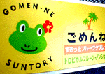
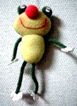
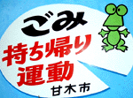

|
ハワイアンで清涼すっきりカエル！ 【福岡発=げこげこ大王直筆】みんなは清涼剤とか食べているかな。車の運転の時などに、ガム噛んだりするけど、大王はサントリーからの新製品『ごめんね』が出てから、これに決めているのである。
それは、ハイビスカスの花飾り？をつけたハワイアンなカエルがシールとしてついている清涼剤だから！濃縮パイナップル入り５０粒もはいっているぞーっ。車にこいつをつんでいると、こころもなごむしなー。
謎のカエルけろろんがＨＰ開設！ 【福岡発=パンチャック同志記者】こんにちわ、ホームページを作ったので、リンクしてください。紙粘土のかえるケロ丸くん、幸せのぷくぷくねこのページです。よろしくお願いします。【全国かえる奉賛会】平成１０年5月7日号で紹介していた謎のカエルけろろんのホームページが完成していた。
顔面に赤い鼻がついているのが特徴で、ふにゃふにゃ感が心地よい。
インターネット時代になったら、づぎつぎとカエル世界の表舞台に登場するので、うれしいぞー。
立川エルロード商店会がカエルスタンプ！【東京発=孝男同志記者】かわいいカエルのスタンプサービスを実施している商店街があります。東京都立川市若葉町にある「エルロード商店会」の「カエルチップ」です。商店会の人が自分でデザインした絵をもとに、１００円買うごとに１枚くれるお買い物サービス券です。たぶん日本広と言えども、カエルをモチーフにした商店会スタンプはここだけだと思います。 【全国かえる奉賛会】エルロード商店会とは、実はカエルロード商店会なのであろう！東京のカエル都市として著名な、かえる美容室やカエルモノレールキャラなどで知られる立川市にまたもカエル名物が登場とは！
ぜひぜひ画像がほしいものである。カエラーの諸君は、せこいデパートのポイントカードなどを廃棄処分にして、エルロード商店会で買い物してカエルポイントをためよう！
 甘木市ごみ持ちカエル宣言！【福岡発=ダイちゃん同志記者】甘木市を通過していたら、やせたカエルがゴミ持ちカエル運動を提案していたので、ただちに賛同し、車内で食べたゴミなどは、すべて福岡市に持ち帰りました。帰宅途中には、春日市の交通安全カエルにも遭遇し、福岡県内は官民一体となってカエル一色になりつつあると喜んでいます。 げこげこ大王の相談コーナー！
【大王回答】ううーむ。カエラーの総本山にカエル撃退法を質問するとは大胆なり(笑)。しかし捕獲して生かして川に返している誠意には感謝するぞ。。よほどに湿気が多い場所のようで、近くに川もある環境なのですね。残念ながら、大王には『天敵のヘビを飼育して防衛部隊として配置する』ことくらいしかおもいつかん。しかしそれだとカエルよりもさらに恐いと思うぞ。カエルに危害を加えることなく、彼の家に立ち寄らないようにする方法はないか。だれかいい知恵があったら、おしえてあげてくれー。
投稿採用者に武功カエル徽章を授与！ |
かえる古新聞過去に取り上げた記事を見出し付きで一覧したい人は、ここをクリック◆創刊号を見る◆先週号を見る◆話題の号を見る◆かえる新聞の昔を読む
|
私も入っています。。全国かえる奉賛会
大王様に会うには、このバナーをクリック。ずっと奥に写真館があるぞ。全国かえる奉賛会に入会するには、自分のホームページのどこかに、下の部分を追加するとバナーがリンク付きで表示されるぞ。どんどん入会しましょー |


|